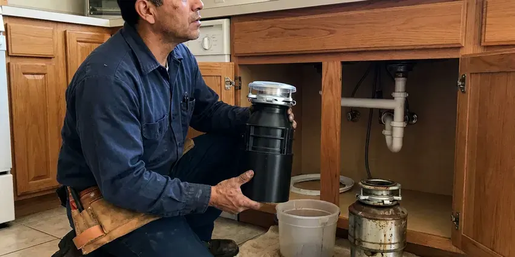

Grease Trap Installation in Stillwater, OK
Grease trap installation in Stillwater, OK, sized from your fixture list and set where your staff can clean it.
- Sized to PDI and ASME
- Overnight Installs Available
- Traffic-Rated Lids
- Local Oklahoma Plumbers

Get a Grease Trap That Passes in Stillwater, OK
Most indoor traps are set in a day.
Grease Traps Sized to Your Kitchen in Stillwater, OK
Grease traps fail inspections for boring reasons. The flow control is missing or the unit is one size too small for the kitchen it serves. Both of those are avoidable. We install grease traps in Stillwater with those checks done before the inspector shows up, which is the easiest way to open on schedule and stay open.
Our expertise includes:
- Traffic-rated lids for drive lanes
- Sampling ports where the sewer authority asks
- Units certified to PDI G-101 or ASME

Additional Kitchen Plumbing Services in Stillwater, OK
Our kitchen plumbing services in Stillwater, OK cover sinks, disposals, dishwashers, and grease traps so your kitchen stays clean, safe, and fully functional.




Garbage Disposal Replacement in Stillwater


Customers
Why Choose JBK Plumbing for Grease Trap Installation in Stillwater, OK?
Grease that gets past a trap hardens in the sewer lateral like candle wax, and the first sign is usually a floor sink backing up during service. Jetting clears it, but it comes back. The fix is a trap that is sized right and has a working flow control.
- Minimal Downtime, Installs after close or on your day off keep you serving.
- Tested Before We Leave, A full sink is dumped at once to prove it keeps up with your worst case.
- Cleanable Placement, We leave room to lift the lid and scrape the baffles without moving equipment.
Citywide Coverage
From a single coffee bar to a commissary serving a dozen food trucks, we cover grease trap installs throughout the Stillwater area. The size changes. Our sizing method and our inspection checklist stay the same on every job.
Experienced Team
Ask any of our plumbers why a trap needs a flow control and you will get a straight answer, not a sales pitch. Our crew walks you through the sizing in plain language. We show your staff how to clean the trap and keep the log. It takes ten minutes.
Safety-First Approach
Grease traps produce hydrogen sulfide gas, which can knock a person unconscious in a confined space within a few short breaths. We treat buried interceptors as permit-required confined spaces and never enter one without ventilation and a gas meter. Usually nobody has to go in. We do as much as possible from the surface.
Trusted Certified Stillwater Plumbing Services Professionals
At JBK Plumbing, we are proud to offer certified plumbing services throughout Stillwater, OK. Credentials matter in this trade. Our plumbers hold recognized industry credentials, and they follow strict safety and quality rules on every repair, installation and maintenance call we run.
Call Us Now PHCC Plumbing Contractor Recognition
PHCC Plumbing Contractor Recognition Better Business Bureau (BBB) Accreditation
Better Business Bureau (BBB) Accreditation Angi Certified Pro
Angi Certified Pro ISO 9001 Quality Management Certification
ISO 9001 Quality Management CertificationRestaurant Grease Trap Installation in Stillwater, OK
Gravity Grease Interceptor Installation in Stillwater, OK
Concrete or polyethylene, a buried gravity interceptor is a two-compartment tank with tees on the inlet and outlet that reach down below the grease layer. Precast concrete weighs more and handles a parking lot better than plastic. Poly is easier to set. With a plastic tank in wet ground we add anti-flotation anchoring, because an empty tank in saturated soil can pop right out of the hole.

Restaurant Grease Trap Compliance in Stillwater, OK
Most sewer authorities run a FOG program with an inspector who opens your trap and checks your pump-out manifests against the schedule they set. A failed inspection can bring a fine or an order to upgrade. We install to pass. That means a sample port where the program wants one and a unit sized to the number their formula gives, not the number the last contractor guessed.
Commercial Grease Trap Installation in Stillwater
A commercial kitchen with a three-compartment sink, a pre-rinse station and two floor sinks can push 50 gallons a minute of greasy water at the dinner rush. Our sizing starts from your peak flow, the worst ten minutes of the night, rather than a daily average. Undersized traps are the usual failure. We set the unit, run the inlet and outlet in schedule 40 PVC or cast iron, and add the flow control fitting the manufacturer calls for.
Large Outdoor Grease Interceptor Installation in Stillwater
Outdoor gravity interceptors run from 750 gallons to well past 2,000, and setting one means an excavator on site and a traffic-rated lid if it sits in the drive lane. Before anything ships, we check that the tank and covers carry an H-20 traffic rating where trucks will roll over them. Most go in over two to four days. The inlet invert has to sit a couple of inches above the outlet, and we shoot both with a laser level before backfill.
Grease Trap Installation Cost in Stillwater, OK
Price follows size and location more than brand. The low end is a small indoor unit with easy access and a short pipe run. Outdoor tanks with digging and a permit sit at the top of the range. We quote after a site visit.
Automatic Grease Removal Units in Stillwater
An automatic grease removal unit heats the trapped grease and skims it into a container on a timer, so staff empty a bucket instead of scraping a tank. They cost more up front. Plan for a dedicated circuit near the unit, which your electrician will need to run. Fry-heavy kitchens like them most.
Emergency Grease Trap Services in Stillwater, OK
A grease trap backing up into the floor sinks at the start of Friday dinner service means a closed kitchen and a health inspector who may not let you reopen until it is fixed. We send a tech with a jetter and a camera to find out whether the trap or the line on either side is the problem. Often it is the outlet. A failed trap can often get a stopgap unit that night and a proper replacement later in the week.

Grease Trap Installation for Schools and Institutions in Stillwater
School cafeterias and hospital kitchens cook in big batches and wash in big batches, which means large pot sinks and a dish machine running hard for two hours after each meal. Most end up with an outdoor gravity interceptor. We schedule around the calendar. For schools that often means digging over a break, and for hospitals it means phasing the tie-in so the kitchen never fully shuts down.
Grease Trap Installation Near Stillwater, OK
Nearby service matters after the install too. Lids crack and gaskets wear, and a crew based near you can be back on site the same day with the part. Spare gaskets and lid bolts for the brands we set ride on our trucks.
Restaurant owners around Stillwater call us for new installs and the occasional emergency swap, and the phone at (405) 507-8396 is answered seven days a week. Weekend calls get a real person. For a backed-up trap we try to have a tech on site the same day so you do not lose a dinner service.
JBK Plumbing at a Glance
- Licensed and insured plumbers serving Stillwater, OK
- 24/7 emergency service with same-day scheduling
- Upfront, flat-rate pricing before work begins
- 4.8-star rated by 318+ Oklahoma customers
Stillwater Map
Stillwater Information
- Population
- 49,525
- Area codes
- 405/580/918
- Service area
- Stillwater and towns within a 40 mile drive
- Nearby
- Edmond, Enid, Midwest City, Oklahoma City
A properly sized grease trap keeps grease out of your lateral and out of the public main in Stillwater, OK. Hot summers and sudden temperature swings are the main climate stress in Oklahoma, putting extra strain on pipes, joints and water heaters.
Expert Services
Call JBK Plumbing for reliable plumbing work done by licensed pros in Stillwater, OK.
Our Specialized Plumbing Services in Stillwater, OK
At JBK Plumbing, you get every kind of plumbing service from one company across Stillwater, OK. We go from leak detection all the way to full system installations, for homes and commercial buildings, and we do it quickly at a fair price. Here are the core services we offer:


From Sizing to Inspection in Stillwater, OK
Here is how a grease trap job runs in Stillwater, OK, from first call to final inspection.
First Call
Reach us at (405) 507-8396. We ask what drains to the trap and when you need to open.
Site Visit
A plumber checks the space in your Stillwater kitchen, looks at the existing drain lines with a camera and finds a cleanable spot for the trap.
Permit Filing
We file the plumbing permit and the sewer authority's FOG review, with the sizing math attached so it does not bounce back.
Frequently Asked Questions About Grease Trap Installation in Stillwater
Small under-sink hydromechanical traps usually land between $1,000 and $3,000 installed, and buried interceptors with excavation commonly run $5,000 to $20,000 or more. Most of the difference is labor, mainly digging and concrete repair. Permits add a little. We quote in writing after a site visit, with the trap, the labor and the permit fees listed as separate lines.
Half a day for most indoor units. That covers setting the trap, piping the inlet and outlet, installing the flow control and running a water test. Gravity interceptors take two to five days on site, plus time for the inspector to see the tank before backfill and again at final. Permits add lead time.
Two warranties apply here. The trap body carries the maker's coverage, which runs from one year on some steel units to much longer on plastic. We cover our workmanship, meaning leaks at our joints and settling of a tank we set, and we give you the terms in writing before we start.
Almost always, yes. Commercial grease traps fall under the plumbing permit, and many sewer authorities also want their own FOG approval on the size and model. Our office handles the permit paperwork and books the inspections. Expect an inspector on site.
For indoor traps we lean on Zurn, Watts, Schier and Endura, because their parts are easy to find and their units carry PDI or ASME certification. Schier's plastic bodies do not rust, which helps in hot, wet kitchens. Brand matters less than sizing. We pick the rating first, then the brand that fits the space and budget.
From first call to final inspection, most indoor jobs take one to two weeks, and most of that is waiting on the permit and the part. The install itself is often a single day. Outdoor jobs run longer. Allow a month or more for an outdoor tank, counting plan review and delivery.
Watch the pump-out bills. Rising service frequency means the trap has been outgrown or the baffles have failed. Smell is another clue. Slow drains near the trap and failed inspections point to replacement too.
It keeps cooking grease out of the public sewer. Inside the trap, warm wastewater slows and cools, so grease rises and stays put while water flows on. Grease that reaches the mains hardens into blockages, and the sewer authority bills the kitchens it traces back to. Your own drain lines benefit too.
What People Are Saying About Our Plumbing Experts?

Robert G.
The camera showed a full break in our clay sewer line near the street. JBK Plumbing replaced it with a trenchless pipe burst, so the only digging was two small pits in the yard. They let us watch the footage before and after.
Sewer Line Replacement · Midwest City, OK
Nathan E.
Our tankless heater kept throwing an error code and shutting off mid shower. The tech flushed the heat exchanger, which was full of scale, and replaced a bad flow sensor. Hot water has been steady for half a year now.
Water Heater Repair · Shawnee, OK
Megan L.
Our upstairs tub drained so slowly that every shower turned into a bath. JBK Plumbing pulled a wad of hair out of the stopper and then snaked the line past the trap. Three months later it still drains fast.
Drain Cleaning · Shawnee, OK
Laura S.
Our 40 gallon tank started leaking from the bottom after thirteen years. The tech hauled the old one out, set a new unit with a fresh expansion tank, and had hot water running in about four hours. He took the old tank with him too.
Water Heater Replacement · Midwest City, OKRachel N.
Hard water was leaving white crust on every faucet and our dishwasher was struggling. The tech tested the water, recommended a softener sized for a family of five, and installed it with a bypass valve in one afternoon. The spots on our glasses are gone.
Water Softener · Stillwater, OK
Patricia H.
We had a slab leak that two other companies could not find. JBK Plumbing located it in under an hour with a listening device. They rerouted the line through the attic instead of breaking up the floor, so we kept our kitchen tile.
Slab Leak Repair · Shawnee, OK